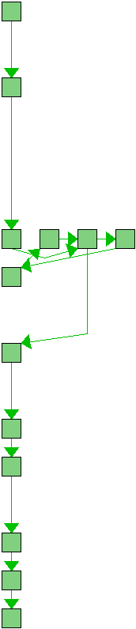
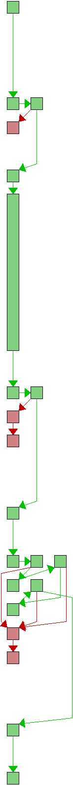
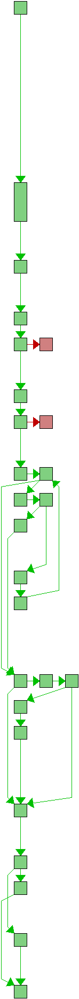

source src/diff_parse.c
| Line | Flow | Count | Block(s) | Source |
|---|---|---|---|---|
| 1 | - | /* | ||
| 2 | - | * Copyright (C) the libgit2 contributors. All rights reserved. | ||
| 3 | - | * | ||
| 4 | - | * This file is part of libgit2, distributed under the GNU GPL v2 with | ||
| 5 | - | * a Linking Exception. For full terms see the included COPYING file. | ||
| 6 | - | */ | ||
| 7 | - | |||
| 8 | - | #include "diff_parse.h" | ||
| 9 | - | |||
| 10 | - | #include "diff.h" | ||
| 11 | - | #include "patch.h" | ||
| 12 | - | #include "patch_parse.h" | ||
| 13 | - | |||
| 14 |  | 97 | 2 | static void diff_parsed_free(git_diff *d) |
| 15 | - | { | ||
| 16 | 97 | 2 | git_diff_parsed *diff = (git_diff_parsed *)d; | |
| 17 | - | git_patch *patch; | ||
| 18 | - | size_t i; | ||
| 19 | - | |||
| 20 | 249 | 2,4-6 | git_vector_foreach(&diff->patches, i, patch) | |
| 21 | 152 | 3 | git_patch_free(patch); | |
| 22 | - | |||
| 23 | 97 | 7 | git_vector_free(&diff->patches); | |
| 24 | - | |||
| 25 | 97 | 8 | git_vector_free(&diff->base.deltas); | |
| 26 | 97 | 9 | git_pool_clear(&diff->base.pool); | |
| 27 | - | |||
| 28 | 97 | 10 | git__memzero(diff, sizeof(*diff)); | |
| 29 | 97 | 11 | git__free(diff); | |
| 30 | 97 | 12 | } | |
| 31 | - | |||
| 32 |  | 97 | 2 | static git_diff_parsed *diff_parsed_alloc(void) |
| 33 | - | { | ||
| 34 | - | git_diff_parsed *diff; | ||
| 35 | - | |||
| 36 | 97 | 2,3 | if ((diff = git__calloc(1, sizeof(git_diff_parsed))) == NULL) | |
| 37 | ##### | 4 | return NULL; | |
| 38 | - | |||
| 39 | 97 | 5 | GIT_REFCOUNT_INC(&diff->base); | |
| 40 | 97 | 6 | diff->base.type = GIT_DIFF_TYPE_PARSED; | |
| 41 | 97 | 6 | diff->base.strcomp = git__strcmp; | |
| 42 | 97 | 6 | diff->base.strncomp = git__strncmp; | |
| 43 | 97 | 6 | diff->base.pfxcomp = git__prefixcmp; | |
| 44 | 97 | 6 | diff->base.entrycomp = git_diff__entry_cmp; | |
| 45 | 97 | 6 | diff->base.patch_fn = git_patch_parsed_from_diff; | |
| 46 | 97 | 6 | diff->base.free_fn = diff_parsed_free; | |
| 47 | - | |||
| 48 | 97 | 6,7 | if (git_diff_options_init(&diff->base.opts, GIT_DIFF_OPTIONS_VERSION) < 0) { | |
| 49 | ##### | 8 | git__free(diff); | |
| 50 | ##### | 9 | return NULL; | |
| 51 | - | } | ||
| 52 | - | |||
| 53 | 97 | 10 | diff->base.opts.flags &= ~GIT_DIFF_IGNORE_CASE; | |
| 54 | - | |||
| 55 | 97 | 10,11,13 | if (git_pool_init(&diff->base.pool, 1) < 0 || | |
| 56 | 97 | 12,15 | git_vector_init(&diff->patches, 0, NULL) < 0 || | |
| 57 | 97 | 14 | git_vector_init(&diff->base.deltas, 0, git_diff_delta__cmp) < 0) { | |
| 58 | ##### | 16 | git_diff_free(&diff->base); | |
| 59 | ##### | 17 | return NULL; | |
| 60 | - | } | ||
| 61 | - | |||
| 62 | 97 | 18 | git_vector_set_cmp(&diff->base.deltas, git_diff_delta__cmp); | |
| 63 | - | |||
| 64 | 97 | 19 | return diff; | |
| 65 | - | } | ||
| 66 | - | |||
| 67 |  | 97 | 2 | int git_diff_from_buffer( |
| 68 | - | git_diff **out, | ||
| 69 | - | const char *content, | ||
| 70 | - | size_t content_len) | ||
| 71 | - | { | ||
| 72 | - | git_diff_parsed *diff; | ||
| 73 | - | git_patch *patch; | ||
| 74 | 97 | 2 | git_patch_parse_ctx *ctx = NULL; | |
| 75 | 97 | 2 | int error = 0; | |
| 76 | - | |||
| 77 | 97 | 2 | *out = NULL; | |
| 78 | - | |||
| 79 | 97 | 2 | diff = diff_parsed_alloc(); | |
| 80 | 97 | 3,4 | GIT_ERROR_CHECK_ALLOC(diff); | |
| 81 | - | |||
| 82 | 97 | 5 | ctx = git_patch_parse_ctx_init(content, content_len, NULL); | |
| 83 | 97 | 6,7 | GIT_ERROR_CHECK_ALLOC(ctx); | |
| 84 | - | |||
| 85 | 249 | 8,14 | while (ctx->parse_ctx.remain_len) { | |
| 86 | 162 | 9,10 | if ((error = git_patch_parse(&patch, ctx)) < 0) | |
| 87 | 10 | 11 | break; | |
| 88 | - | |||
| 89 | 152 | 12 | git_vector_insert(&diff->patches, patch); | |
| 90 | 152 | 13 | git_vector_insert(&diff->base.deltas, patch->delta); | |
| 91 | - | } | ||
| 92 | - | |||
| 93 | 97 | 15-17 | if (error == GIT_ENOTFOUND && git_vector_length(&diff->patches) > 0) { | |
| 94 | 2 | 18 | git_error_clear(); | |
| 95 | 2 | 19 | error = 0; | |
| 96 | - | } | ||
| 97 | - | |||
| 98 | 97 | 20 | git_patch_parse_ctx_free(ctx); | |
| 99 | - | |||
| 100 | 97 | 21 | if (error < 0) | |
| 101 | 8 | 22 | git_diff_free(&diff->base); | |
| 102 | - | else | ||
| 103 | 89 | 23 | *out = &diff->base; | |
| 104 | - | |||
| 105 | 97 | 24 | return error; | |
| 106 | - | } | ||
| 107 | - |